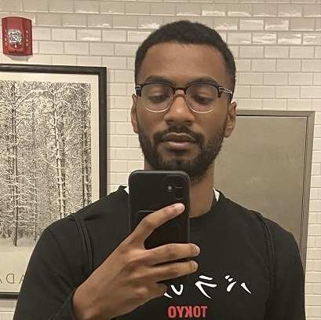

I'm currently a student at Buffalo State University studying Computer Information Systems. This Semester, I'm working at Client Systems as a Client student.
Hey there,
It's nice to meet you.
Having been born in Iraq but raised in Buffalo, NY, I possess a deep curiosity for exploring new places and cultures. I also have a strong passion for investigating the impact of emerging technologies on society, and a fondness for anime. I am constantly motivated by individuals who push boundaries and achieve great things.
If you'd like to chat or challenge me to a friendly game of chess, let me know!
